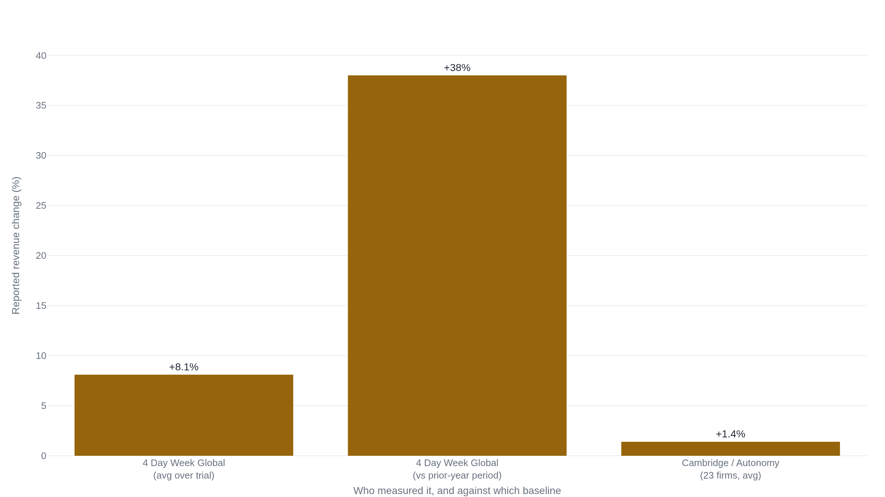

The strongest four-day-week evidence comes from firms that volunteered for it
Boston College and Cambridge researchers measured steady revenue and healthier staff in the firms that cut to four days; whether a legislated 32-hour week would do the same where work cannot be redesigned is the question Manhattan Institute and University College Cork economists press.
What a 32-hour week asks of a firm
The question on the table is not whether some workers would like a shorter week. It is whether the standard full-time week should fall from five days to four, to 32 hours from 40, with no cut in pay. That proposal carries three terms at once: hours drop by a fifth, the paycheck does not move, and the firm's output is supposed to hold. All three can be true together only if each remaining hour produces about a quarter more than it did before, because the work that used to fill 40 hours now has to come out of 32. Every trial is a test of whether that jump in output per hour actually shows up, and every disagreement traces back to whether it can show up outside the firms that went looking for it.
The evidence begins with two coordinated efforts. In 2025 the sociologists Wen Fan and Juliet Schor published a study of 2,896 employees at 141 organizations across six countries who moved to a shorter week for six months, reporting improvements in burnout, job satisfaction, mental health and physical health that did not appear in a set of control companies.1 The same research network, working with the University of Cambridge, ran the United Kingdom's 2022 pilot, 61 organizations and roughly 2,900 workers over six months, the largest coordinated trial to date.2
The question reached for the force of law in 2025. In May Spain's government approved a bill cutting the standard full-time week to 37.5 hours from 40 with no loss of pay, a change it said would benefit 12.5 million workers.34 In September the Congress of Deputies voted the bill down, 178 to 170, after Junts joined the People's Party and Vox to reject it, and Labour Minister Yolanda Díaz vowed to reintroduce it.5 A voluntary schedule that firms may adopt and a legal ceiling that all firms must meet are different propositions, and the camps below are arguing about both. On one side stand the trial researchers and the company principals who kept the schedule. On the other stand economists who read the same pilots as a poor guide to what a mandate would do.
Juliet Schor and the Boston College and Cambridge trial teams, with the company principals who kept it: Atom Bank's Mark Mullen and Awin, organized through 4 Day Week Global
When a firm redesigns its work first and then cuts to four days without cutting pay, output holds, workers get measurably healthier, and almost all of them keep the schedule once the trial ends.
Grant the objection that comes first: these are firms that chose to try. The design concedes as much and builds on it. In the Fan and Schor study, organizations spent up to two months reorganizing work to strip out low-value meetings and interruptions before the six-month trial began, so the shorter week was the reward for a redesign, not a cut imposed on the old routine.1 What the redesign bought was health. Burnout fell from 2.83 to 2.38 on a five-point scale and job satisfaction rose from 7.07 to 7.59 on a ten-point scale, gains that did not show up in the 12 companies that considered the trial but stayed on five days, the study's control group.6 Schor put the finding in plain terms: "Beyond maintaining productivity, people just feel so much better. They feel on top of their work and their life, and they're not stressed out."7
The UK pilot is where the business numbers sit. Across the 23 organizations that supplied revenue data, revenue was broadly stable, up 1.4 percent on average over the trial; 71 percent of employees reported lower burnout, sick days fell 65 percent, and staff departures dropped 57 percent against the same months a year earlier.2 The Cambridge economist Brendan Burchell framed the result as the answer to the doubt: "Before the trial, many questioned whether we would see an increase in productivity to offset the reduction in working time, but this is exactly what we found."2 The durability answers the charge that any new schedule flatters itself in a novelty window. One year on, Autonomy's follow-up found at least 54 of the 61 firms still running the policy and 31 of them making it permanent.8
The firms that kept it are not all small consultancies. Atom Bank moved to a 34-hour, four-day week in November 2021 and held it; the announcement drew a 500 percent surge in job applications in a single week,9 and its chief executive Mark Mullen put the case bluntly: "I think a four-day week isn't progressive, it's bloody logical."10 The marketing firm Awin ran an 18-month trial across 17 offices, kept the schedule, and reported gross profits up about 13 percent and regrettable turnover down 33 percent;11 more than 1,300 staff took part.12 The organizing body, 4 Day Week Global, reports its own pooled figures louder still: across its 2022 US, Ireland and Australia cohort, revenue up about 8 percent over the trial, and up 38 percent against the same period the year before.13
The longest-running public evidence comes from Iceland, where trials run by Reykjavík City and the national government moved more than 2,500 workers, over one percent of the workforce, to shorter hours between 2014 and 2021. The report by Autonomy and the Icelandic group Alda concluded that the trials strongly challenge the idea that cutting hours lowers service provision, with productivity maintained and stress down.14 Honesty about that case matters to the argument: most Icelandic participants moved to 35 or 36 hours, not the full 32, so it tests a smaller cut than the standard on offer.15 What it shows is that even a partial reduction held output in public services often assumed to have no slack.
Juliet Schor (Boston College), standing here because she helped design both the six-country study and the pooled pilots, and reads their shared result as output holding while health improves.1
The economists Allison Schrager (Manhattan Institute) and Wim Naudé (University College Cork), the researcher A.J. Veal (UTS), and Krystal Hosting, the firm that went back
The trials measured self-selected, white-collar firms that could redesign their work; a legislated 20 percent cut in hours would land hardest on labor-intensive firms that cannot, raising their costs without the matching jump in output.
Grant the wellbeing gains and the kept schedules; the objection is not that the trials lied. It is that they measured the wrong firms for the question a mandate poses. Allison Schrager's point is that the studies finding no revenue drop sit in "non-customer-facing service jobs," and whether the same holds in "more labor-intensive jobs is doubtful." The one large real-world case she reaches for is France's 1998 move to a 35-hour week, which in her reading "did not increase employment or happiness." Her conclusion is about who pays: a legislated 32-hour week would "mostly benefit high-skill and well-paid workers in already productive companies," while low-margin firms facing what amounts to a 20 percent rise in the hourly cost of labor would "either close, increase prices or replace workers with technology."16
Wim Naudé builds the productivity objection into arithmetic. In economies with already high output per worker, cutting hours a fifth requires an equal jump in output per hour just to stand still, and history offers a warning: after Japan legislated shorter hours in 1988, he writes, "productivity did not increase enough to compensate, and economic output between 1988 and 1996 was 20 percent lower than it otherwise would have been."17 His other reasons compound it. Wellbeing gains may fade on the "hedonic treadmill," as he argues France's 35-hour week shows over the long run. Firms that hire part-timers to cover the lost hours tend to invest less in them, raising management costs. And in tight labor markets, cutting everyone's hours would deepen shortages rather than spread work around.17
A.J. Veal takes apart the case the other camp leans on hardest. Iceland, he shows, was not a four-day week at all: workers "moved from a 40-hour to a 35- or 36-hour week, without reduced pay," and in 61 of 66 workplaces the reduction was only one to three hours. He flags the missing control sample and the Hawthorne effect, the tendency of people who know they are being studied to perform, which inflates a trial with no comparison group.18 The critique is not that shorter hours failed in Iceland, but that a modest, well-liked trim was sold as proof of a far larger cut.
The concrete failure is a firm that ran the four-day week and went back. Krystal Hosting, a web-host with a support desk, found that "we only had 50 percent of our helpdesk available on Mondays, our busiest day," and that the backlog never cleared: "the extra recovery time did not increase output by the 20 percent necessary to replace that which had been lost." Its chief executive Simon Blackler reverted to five days and hired five more support staff, bolstering the team by the same fifth of capacity the shorter week had removed.19 Where the work is real-time and must be covered, the hours cannot simply be redesigned away.
Allison Schrager (Manhattan Institute), standing here because she argues the mandate case under her own byline as an economist, distinguishing what a firm may choose from what the law should require of every firm.16
Whether a mandate behaves like the firms that raised their hands
Strip away the noise and one factual question is left, with a forecast riding on top of it. The fact: does output per hour rise by roughly a quarter when hours fall a fifth, outside the firms that volunteered and redesigned their work first? The forecast: would a legislated cut, imposed on firms that did neither, behave like the voluntary pilots or like Krystal? Both camps look at nearly the same trials. They disagree about what those trials can be made to predict.
The measurement gap is where the disagreement hides. Every trial reports output per worker, the total a firm produces divided by its headcount. None cleanly reports output per hour, the total divided by the hours actually worked. A firm can hold output per worker while output per hour falls, if it adds people, and Krystal did exactly that, hiring five staff to cover the day it lost.19 Self-selection sharpens the same point. The firms in the pilots chose to enter, skewed toward knowledge work with slack to cut, and the study's own comparison group was 12 self-selected companies rather than a randomized control.1 None of that makes the health gains false. It makes them a weak forecast of a labor-intensive firm that was ordered to comply.
The clearest illustration is the revenue claim, where the same direction of movement comes in magnitudes an order of magnitude apart. The peer-reviewed UK report measured revenue broadly stable, up 1.4 percent across the firms that supplied data.2 The organizing advocacy body reported its cohort up about 8 percent over the trial and 38 percent against the prior year.13 Same policy, and figures that do not belong in the same sentence without saying who produced each one.

Two further tensions are genuine and unresolved. The wellbeing gains are measured over six months, which is too short to tell a durable improvement from the "hedonic treadmill" Naudé describes, where workers adjust and the lift fades.17 And "four-day week" keeps standing in for cuts it does not name. The Iceland result both sides cite was a move to 35 or 36 hours, not the full 32, which is why one camp can call it a success and the other can call it oversold without either misreading the record.18 Under the value question, no dataset decides: whether a city or a state owes its workers a shorter week even where it raises the price of labor is a choice, not a measurement.
What would move an undecided reader is a mandate behaving like a pilot. The first large legislated test came closest in Spain, whose 37.5-hour bill would have imposed the cut on firms that did not raise their hands;3 in September 2025 the Congress voted it down, 178 to 170, and its Labour minister vowed to bring it back.5 Until some legislature passes such a cut and holds it, the effect on the labor-intensive employers Schrager and Naudé name stays unobserved. The second thing to watch for is a trial that measures output per hour, not output per worker, in customer-facing or shift-coverage work, and finds it holding when hours fall a fifth. That is the exact case Krystal failed, and the one the voluntary pilots have not yet run. Until one of those arrives, each camp is reading an honest record that stops just short of the question the other camp is asking.
Sources
- Nature Human Behaviour · Fan, Schor, Kelly & Gu, "Work time reduction via a 4-day workweek finds improvements in workers' well-being" (2025)
- University of Cambridge, Department of Sociology · "New results: world's largest trial of four-day working week" (2023)
- La Moncloa, Government of Spain · Council of Ministers press conference on the bill to cut the maximum working week to 37.5 hours (6 May 2025)
- NBC News / Associated Press · "Spanish ministers agree to cut the legal working week to 37.5 hours" (2025), independent backstop for the bill's approval
- Catalan News · Spain's Congress of Deputies rejects the 37.5-hour working-week bill, 178-170 (10 September 2025)
- The Jerusalem Post · report of the Fan/Schor study's burnout and job-satisfaction figures
- Entrepreneur · carrying Juliet Schor's direct comment on the study
- Autonomy · "Making It Stick," the UK pilot one year on (2024)
- City AM · "Four-day week at Atom Bank leads to 500 per cent surge in job applicants" (2022), reporting Atom Bank's recruitment figure
- Fortune Europe · Atom Bank CEO Mark Mullen on the bank's four-day week (2025)
- Awin · "Awin and ShareASale Permanently Implement Flexi-Week Amid Trial Success," company news release (2023)
- Startups.co.uk · report of Awin's four-day-week results (over 1,300 staff, schedule kept, profits up about 13 percent)
- 4 Day Week Global · US, Ireland and Australia 2022 pilot results (the organizer's own figures)
- Autonomy & Alda · "Going Public: Iceland's Journey to a Shorter Working Week" (2021)
- Singularity Hub · reporting that most Icelandic participants worked 35 hours rather than the full 32
- Manhattan Institute · Allison Schrager, "The Four-Day Work Week Is Decades Away" (2024)
- The Conversation · Wim Naudé, "Five reasons why the four-day week won't work" (2022)
- The Conversation · A.J. Veal, "The success of Iceland's 'four-day week' trial has been greatly overstated" (2021)
- Krystal Hosting · Simon Blackler, "Krystal returns to 5-day working week" (2022)